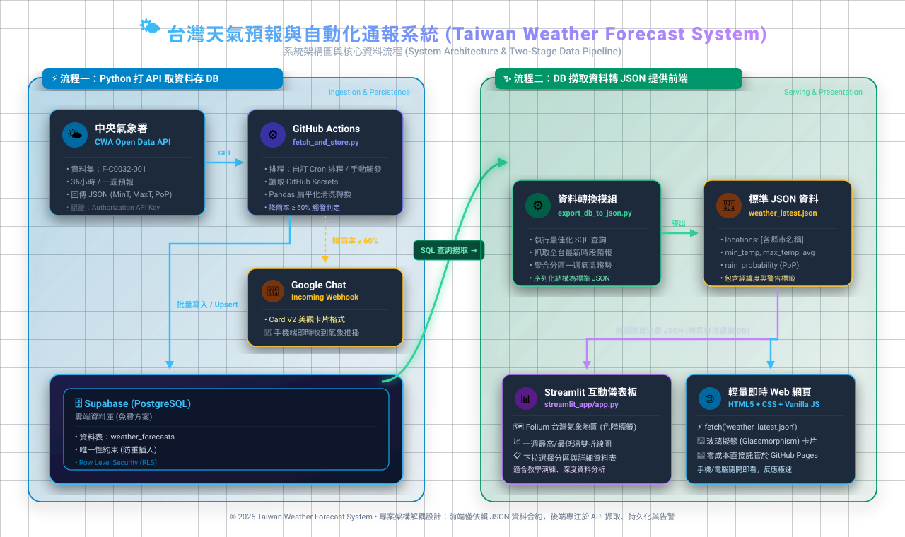
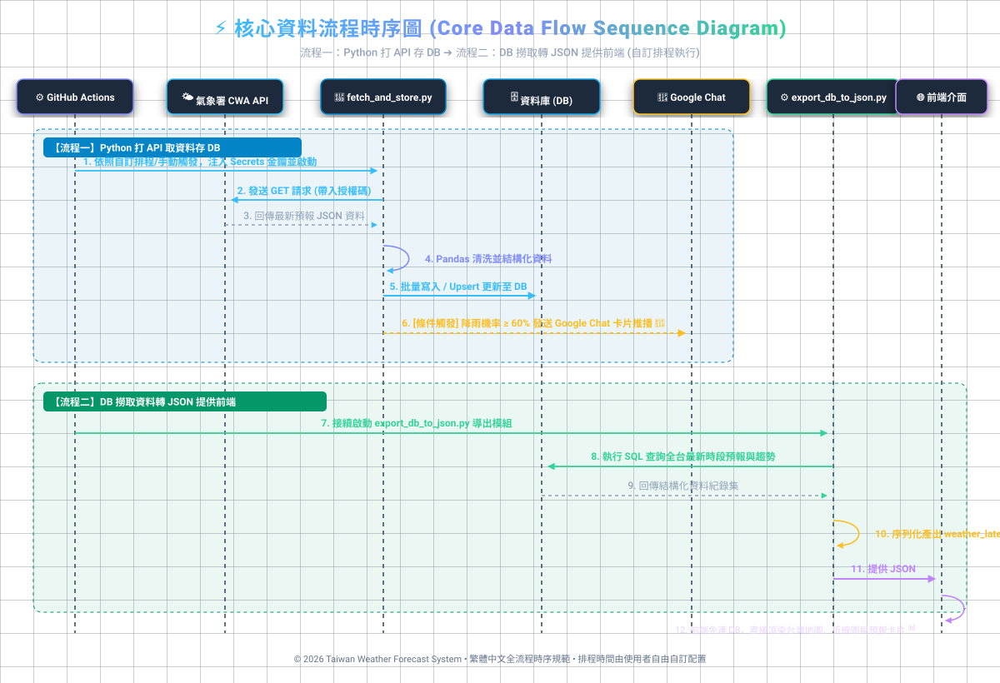

系統架構圖與核心資料流程 (System Architecture & Data Pipeline Visualizer)


F-C0032-001)。fetch_and_store.py 透過 Pandas 轉換資料，批量 Upsert 存入雲端 Supabase (weather_forecasts)。PoP ≥ 60% 時，發送卡片通知至 Google Chat Webhook。export_db_to_json.py 執行最佳化 SQL 查詢全台最新時段預報。data/weather_latest.json，包含經緯度、溫度、降雨率與週趨勢。fetch() 渲染即時氣象卡片，零後端負擔。